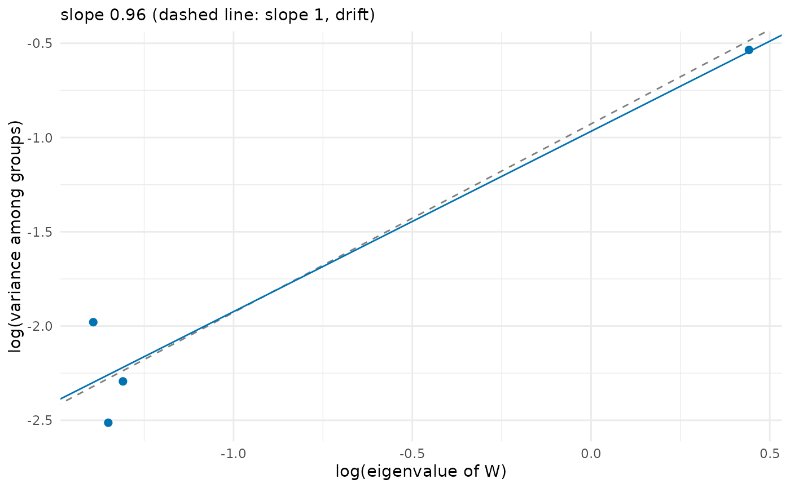

Test whether divergence among groups is proportional to variation within them
Source:R/drift_test.R
drift_test.RdTests the prediction of neutral evolution that the variance among group means is proportional to the variance within groups (Lande 1979): under genetic drift alone the covariance matrix of the means, \(B\), is expected to be \((t / N_e) G\), where \(G\) is the additive genetic covariance matrix, \(t\) the number of generations and \(N_e\) the effective population size. Following Ackermann & Cheverud (2004), the group means are projected on the principal components of the within-group matrix \(W\), and the logarithm of the variance among groups on each component is regressed on the logarithm of its eigenvalue. Under drift the slope is 1; a slope above 1 means more divergence along the main axes of variation than drift predicts (for example, selection along them), and a slope below 1 means more divergence along the minor axes.
Arguments
- x
A data frame or a numeric matrix with one row per individual (for example, from
sample_individuals()).- group
The groups (populations, sites or species): a vector with one value per row of
x, or the name of a column ofx.- traits
With a data frame, the names of the trait columns.
NULL(the default) takes every numeric column exceptgroup(or the column equal to it); with the output ofsample_individuals(), which also has numeric columns of abundance, environment and means, name the traits.- W
NULL(the default) for the pooled covariance within groups, or a covariance matrix with one row and column per trait (for example, a known \(G\)).- correct
Whether to subtract the sampling variance of the group means (needs groups with more than one individual).
- level
The confidence level of the interval for the slope.
Value
An object of class drift_test: a list with slope, its standard error se, the
interval conf_int, the statistic (\(t\)) and p_value of the test of slope 1, the
intercept (the logarithm of the proportionality constant, an estimate of \(\log(t /
N_e)\) when W is \(G\) and correct = TRUE), df, n_groups, n_traits, the matrix W
and a data frame components with the eigenvalue, the expected sampling variance of
the means (0 without correction) and the between variance (corrected) of each principal
component. It has print() and plot() methods.
Details
By default \(W\) is the pooled phenotypic covariance within groups, which stands in for
\(G\) when it is unknown. This replacement assumes that \(G\) and \(P\) are
proportional; Prôa et al. (2013) found acceptable type I error rates with it only when the
matrices are similar and heritabilities are high, or when \(t / N_e\) is small. A
known \(G\) (for example, from genetic_matrices() or the genetic_var of a simulation)
can be given in W instead. Individuals should be grouped by population when W is
estimated from them: a W pooled within species whose populations diverged (for example by
local adaptation along a gradient) carries that divergence and can hide selection among
species.
The variance of the observed means includes their sampling error, \(P / n\) for groups
of \(n\) individuals. Unless \(P\) is proportional to W, this error flattens the
slope (most with small groups and little divergence), so by default (correct = TRUE) the
expected sampling variance on each component, \(v_k^\top P v_k\) times the mean of
\(1 / n\) over groups, with \(P\) the pooled covariance within groups, is
subtracted from the variance among means before the regression. The regression treats each component as an independent
observation, so with few traits the test has little power, and the slope has \(q - 2\) degrees of freedom for \(q\) traits.
References
Ackermann, R. R. & Cheverud, J. M. (2004). Detecting genetic drift versus selection in human evolution. Proceedings of the National Academy of Sciences, 101, 17946–17951. doi:10.1073/pnas.0405919102
Lande, R. (1979). Quantitative genetic analysis of multivariate evolution, applied to brain:body size allometry. Evolution, 33, 402–416. doi:10.1111/j.1558-5646.1979.tb04694.x
Prôa, M., O'Higgins, P. & Monteiro, L. R. (2013). Type I error rates for testing genetic drift with phenotypic covariance matrices: a simulation study. Evolution, 67, 185–195. doi:10.1111/j.1558-5646.2012.01746.x
See also
Other trait variation among individuals:
community_index(),
neighbour_metrics,
nested_variance(),
null_intervals(),
plot.mc_trait_gradient(),
plot.nested_variance(),
plot.trait_flex(),
plot.trait_rarefaction(),
plot.tstats(),
plot_population_traits(),
population_shifts(),
sample_individuals(),
subsample_individuals(),
trait_densities(),
trait_flex(),
trait_gradient(),
trait_gradient_bayes(),
trait_gradient_phylo(),
trait_gradient_test(),
trait_gradient_weights(),
trait_rarefaction(),
tstats(),
tstats_summary()
Examples
set.seed(1)
G <- genetic_matrices(1, 4, correlation = 0.5)$genetic_var[[1]]
# 30 populations that diverged by drift: means drawn from N(0, G t / Ne)
means <- matrix(rnorm(30 * 4), 30) %*% chol(G * 0.5)
ind <- means[rep(1:30, each = 20), ] + matrix(rnorm(600 * 4), 600) %*% chol(G)
test <- drift_test(ind, group = rep(1:30, each = 20))
test
#> Test of proportional divergence (Ackermann & Cheverud 2004)
#> 30 groups, 4 traits
#> slope of log(between variance) on log(eigenvalue): 0.956 (SE 0.189)
#> 95% interval: 0.144 to 1.769
#> test of slope = 1 (drift): t = -0.230, df = 2, p = 0.839
plot(test)
